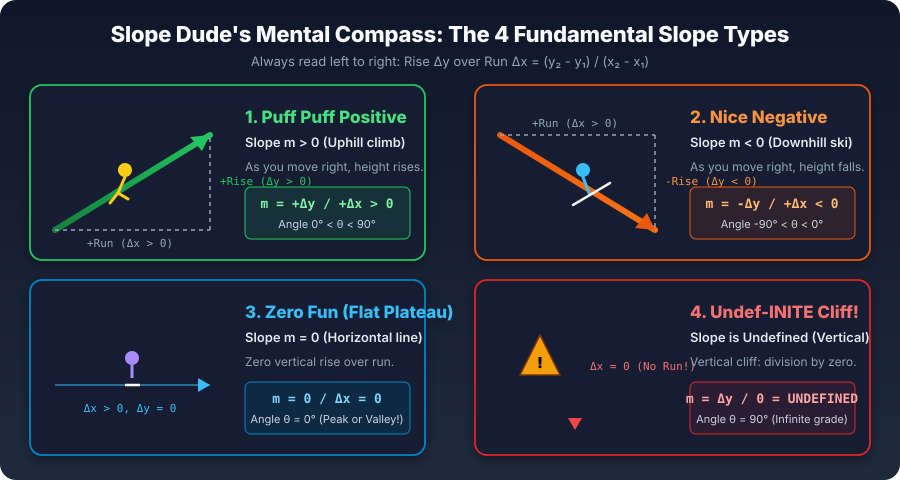
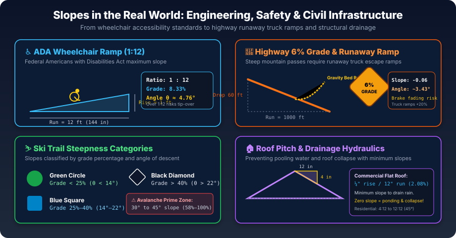
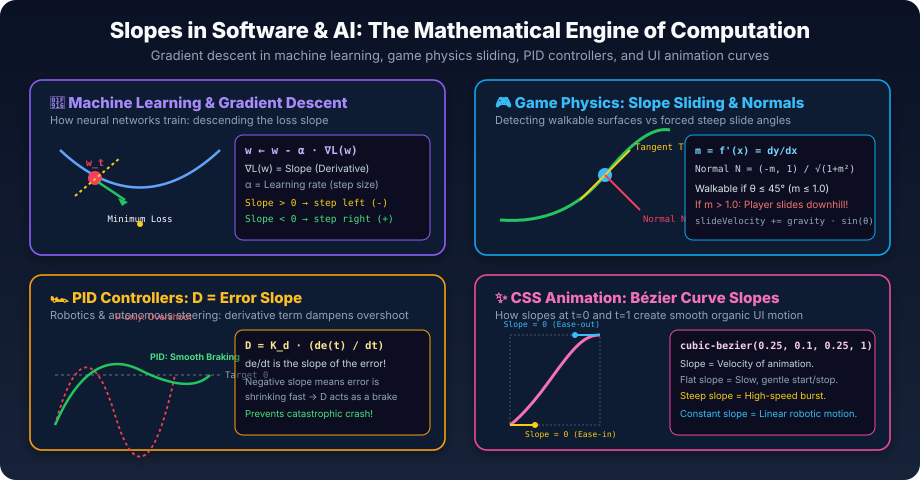
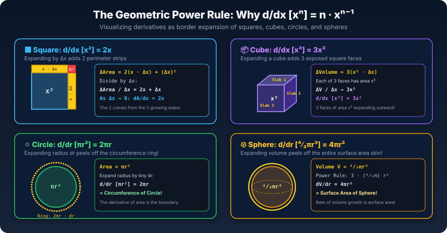

Mathematics · Rate of Change & Calculus Foundations
Slope of a Curve
A straight line maintains one immutable slope everywhere. A curve, however, bends and twists, changing its steepness at every infinitesimal point. How do we measure the exact slope of a curve at a single frozen moment in time? Zoom in far enough, and any smooth curve flattens into a straight line. That single geometric revelation gave birth to calculus and drives everything from ADA accessibility ramps and highway mountain passes to deep neural networks descending loss landscapes.
Learning Targets
- Geometric Local Linearity: Explain why any smooth differentiable curve flattens into its tangent line under extreme magnification.
- The Limit of the Difference Quotient: Compute average rates of change from secant lines and watch them converge to the instantaneous derivative as h → 0.
- Slope Sign & Critical Points: Read f'(x) > 0 as rising, f'(x) < 0 as falling, and f'(x) = 0 as peaks, valleys, or terraces.
- Real-World Engineering Standards: Apply slope formulas to ADA wheelchair ramps (1:12 slope), highway grades (6% maximum), ski slopes, and roof drainage.
- Software & AI Algorithms: Understand how machine learning uses gradient descent (w ← w - α∇L), how game engines compute surface normals and terrain slides, and how PID controllers use error slopes.
- AI Smart Blackboard: Model, test, and prove slope calculations interactively with the embedded AI tutor.
Prerequisites: Linear Equations & Slope and Graphing Calculator. Next: Minecraft Calculus and How e Was Discovered.
Visual Mental Models & Formula Memory Hooks
Formulas are easy to forget when treated as sterile symbols. When connected to physical geometry, memorable mnemonics, and visual intuition, they become unforgettable mental compasses. Click any diagram below to inspect it at full resolution in the classroom lightbox.




Before you can walk down the hotel corridor (Run Δx), you have to ride the elevator up or down to your floor (Rise Δy). Therefore, Rise always sits on top in the numerator: m = Rise / Run = Δy / Δx = (y₂ - y₁) / (x₂ - x₁). In trigonometry, slope is simply tan(θ) = Rise / Run, so the angle of inclination is θ = arctan(m)!
Lab 1 · Zoom Until It Is Straight (Local Linearity)
Choose a curve and a point on it. Then turn up the magnification. The window shrinks around the point, and the same scale is used horizontally and vertically, so the slope you see is the real slope. Watch the curve settle indistinguishably onto the tangent line.
Lab 2 · From Average to Instantaneous (Secant Convergence)
Slope requires two points, but at a single frozen instant there is only one. The solution: take a second point a small distance h away and draw the secant line through both. That slope is the average rate of change over the interval. Now shrink h and watch it converge on the exact instantaneous tangent slope.
(f(x₀+h) − f(x₀)) ÷ h0
f'(x₀) exact limit0
Notice: You can never plug in h = 0 directly (that produces the indeterminate undefined fraction 0 ÷ 0). Yet the secant line has an unmistakable geometric target. The limit of the difference quotient as h → 0 is the derivative!
Lab 3 · The Slope Function & Critical Points (f vs f')
Measure the slope at every single point along a curve, and you generate a brand-new function: the slope function (the derivative f'). Drag the point x₀ across the domain. The top graph shows f(x); the bottom graph graphs its slope. Where the curve ascends the slope is positive; where it descends the slope is negative; at peaks and valleys the slope is exactly zero.
Lab 4 · The Power Rule & Finite Differences in Code
For polynomials f(x) = xⁿ, the derivative follows the rule f'(x) = n · xⁿ⁻¹. But in software engineering and physics simulations, computers cannot take limits of infinity. Instead, they use finite differences. Compare the forward difference against the central difference below to see why symmetric differences cancel first-order error!
n · x₀ⁿ⁻¹0
(f(x+h)-f(x-h))/(2h)0
(f(x+h)-f(x))/h0
| Function f(x) | Slope Function f'(x) | Physical / Geometric Reading |
|---|---|---|
| x² | 2x | Expanding square grows on 2 outer edge strips of length x |
| x³ | 3x² | Expanding cube grows on 3 outer face slabs of area x² |
| x | 1 | A straight 45° line has a constant slope of 1 everywhere |
| constant C | 0 | A flat horizontal line never changes height (Δy = 0) |
| π r² (Circle) | 2π r | Peeling off the area of a circle produces its circumference! |
| ⁴⁄₃ π r³ (Sphere) | 4π r² | Expanding volume of a sphere produces its surface area skin! |
Lab 5 · Real-World Engineering Sandbox: Slopes That Build Civilization
Every bridge, accessibility ramp, highway mountain pass, and commercial roof relies on precision slope calculations to keep people safe. Switch scenarios below and adjust the parameters to test real-world engineering compliance.
Lab 6 · Software Development & AI Engineering: Computational Slopes
Slopes are the computational beating heart of modern software: from deep learning backpropagation to video game collision sliding and robotics control. Select a domain below to interact with live computer algorithms driven by slope derivatives.
Lab 7 · AI Smart Blackboard: Calculus & Slope Studio Live Recognition & Proof Active
The AI Smart Blackboard is your real-time mathematical copilot. Draw freehand slopes and curves with digital chalk, drag the tangent ruler, or load any problem from earlier labs. The embedded AI neural classifier identifies the equation, computes the exact derivative, plots the tangent line, and constructs a step-by-step Common Core calculus proof with voice narration.
Guided Practice
Solve each problem below. Answers within 0.05 count as correct. Click ✨ AI Blackboard to load that exact problem onto the blackboard for a visual step-by-step walkthrough!
1. Slope of the line passing through (2, 3) and (6, 11)?
2. Average rate of change of f(x) = x² between x = 1 and x = 4?
3. Instantaneous tangent slope of f(x) = x³ at x = 2?
4. At what x does f(x) = 2x² − 8x + 5 have slope = 0 (minimum valley)?
5. ADA ramp has a 24-inch rise. What is the minimum run (in inches) for 1:12 compliance?
6. Rocket height s(t) = −5t² + 50t. What is its velocity at t = 3 seconds?
7. AI Gradient Descent: Loss L(w) = w², w = 4, α = 0.1. What is the updated weight w?
8. Instantaneous slope of f(x) = sin x at x = π/3 (60°)?
Exit Ticket & Conceptual Synthesis
- Explain in your own words why zooming in on any smooth curve reveals a straight line, and how secant lines approach the tangent needle as h → 0.
- In machine learning, why does gradient descent subtract the derivative (
w ← w - α∇L) rather than add it? - Why does the ADA mandate a strict 1:12 slope limit on wheelchair ramps, and what physical danger occurs on a 1:4 slope?
Type your written synthesis answering one or more of the questions above. The AI blackboard will analyze your reasoning against calculus and physics rubrics (limits, local linearity, gradient descent direction, torque/safety).